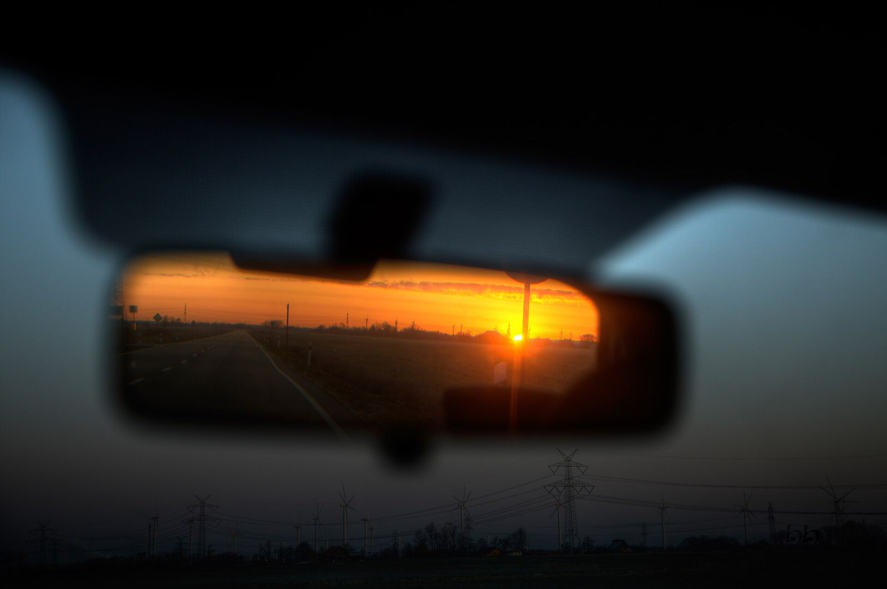
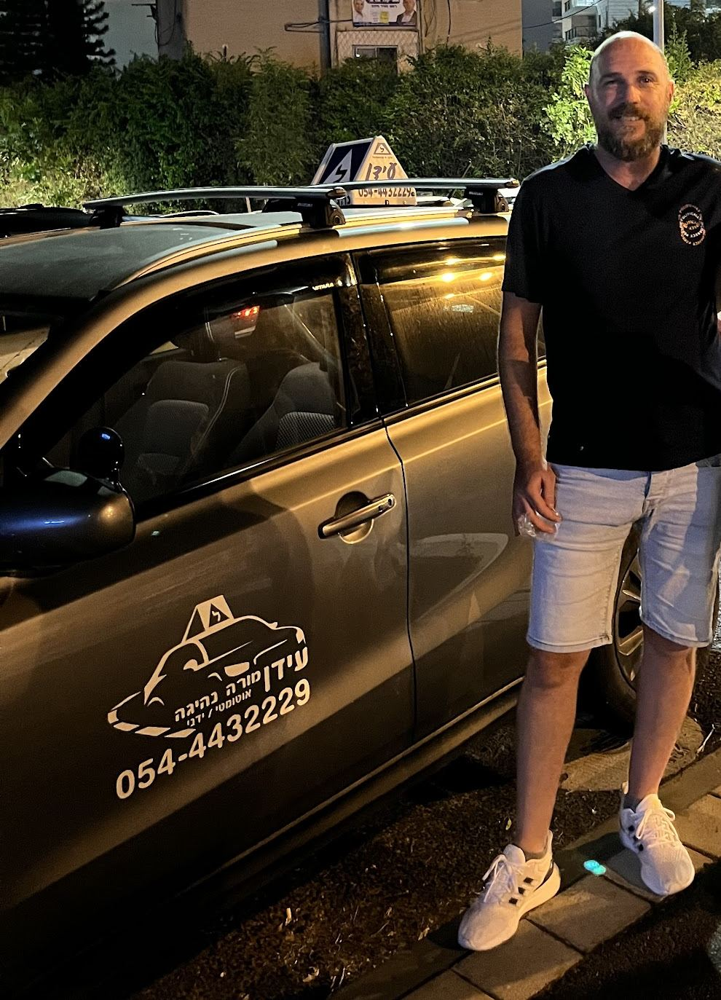
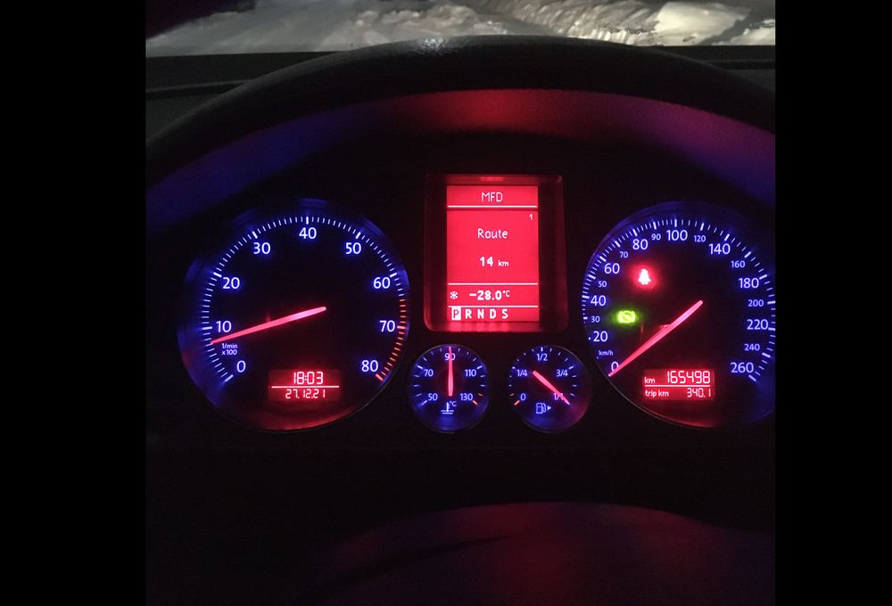
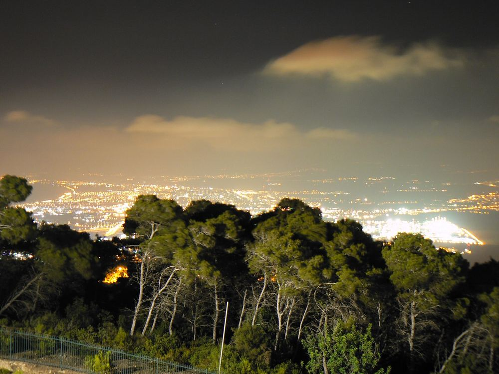
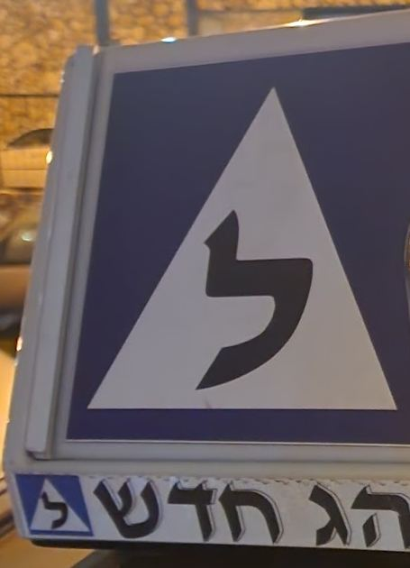

בגובה העינייםAt eye level
שיחה פשוטה וישירה, בלי מילים גדולות.Plain, direct talk. No big words.
מורה נהיגה בחיפה. אוטומט וידני.Driving teacher in Haifa. Automatic and manual.

תמונה להמחשהIllustrative photo
בלי מצמד ובלי החלפת הילוכים. כל הקשב הולך לכביש.No clutch, no gear changes. All your attention goes to the road.
מצמד, הילוכים וזינוק בעלייה. שליטה מלאה ברכב.Clutch, gears and hill starts. Full control of the car.
במילים של התלמידים שלו.In his students’ own words.
שיחה פשוטה וישירה, בלי מילים גדולות.Plain, direct talk. No big words.

תמונה להמחשהIllustrative photoכל תמרון מוסבר צעד אחר צעד.Every manoeuvre, explained step by step.
השיעור נבנה לפי הדרך שבה אתם לומדים.Each lesson follows the way you learn.

תמונה להמחשהIllustrative photoעליות, ירידות וסיבובים, בעיר עצמה.Climbs, descents and bends, in the city itself.
52 ביקורות. הנה שלוש מהן.52 reviews. Here are three.

״מורה נהדר, מסביר ממש טוב, מתאים את עצמו לאופי הלמידה של תלמיד, שיטתי, עם ראש על הכתפיים. הייתי אצל כמה מורי נהיגה והוא ליגה אחרת, בזכותו עברתי טסט עם הפרעת קשב עם הכל.״“A great teacher who explains really well and adapts to each student’s way of learning. Methodical, level-headed. I’d been with several driving teachers and he’s in another league; thanks to him I passed my test, ADHD and all.”
״מורה מצוין, מעל המצופה ומעבר. מלמד בחיבה וברצינות, ובעיקר באהבה. עברתי טסט ראשון בזכות שלמדתי אצלו.״“An excellent teacher, beyond expectations. He teaches with warmth and seriousness, and above all with love. I passed my first test thanks to learning with him.”
״מורה מדהים, סבלני ומסביר מעולה! האווירה כיפית ונהניתי מכל שיעור. בזכותו עברתי טסט ראשון עם מינימום שיעורים.״“An amazing teacher, patient and explains brilliantly! The atmosphere is fun and I enjoyed every lesson. Thanks to him I passed my first test with a minimum of lessons.”
לכל הביקורות בגוגלAll reviews on Google ציטוטים מקוצרים מתוך גוגלShortened, translated from Hebrew
חיפהHaifa